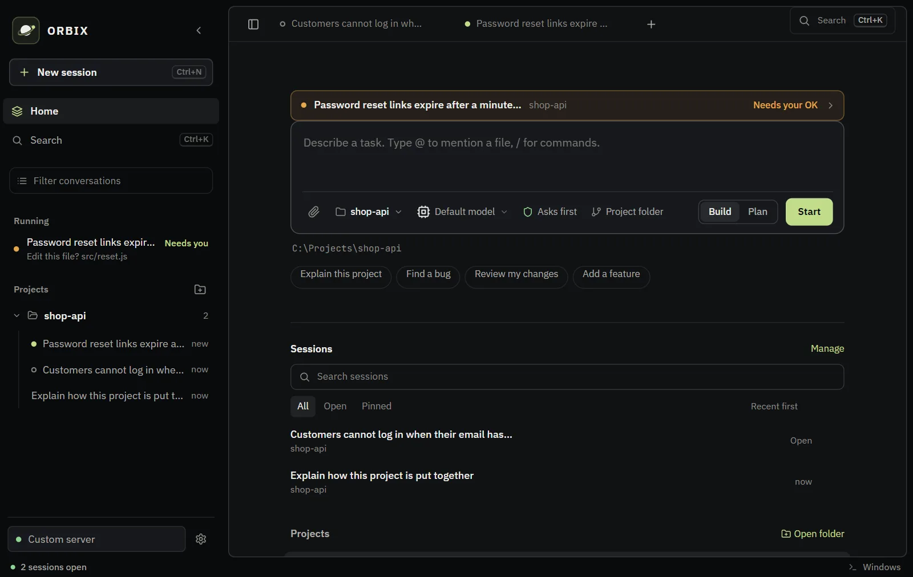
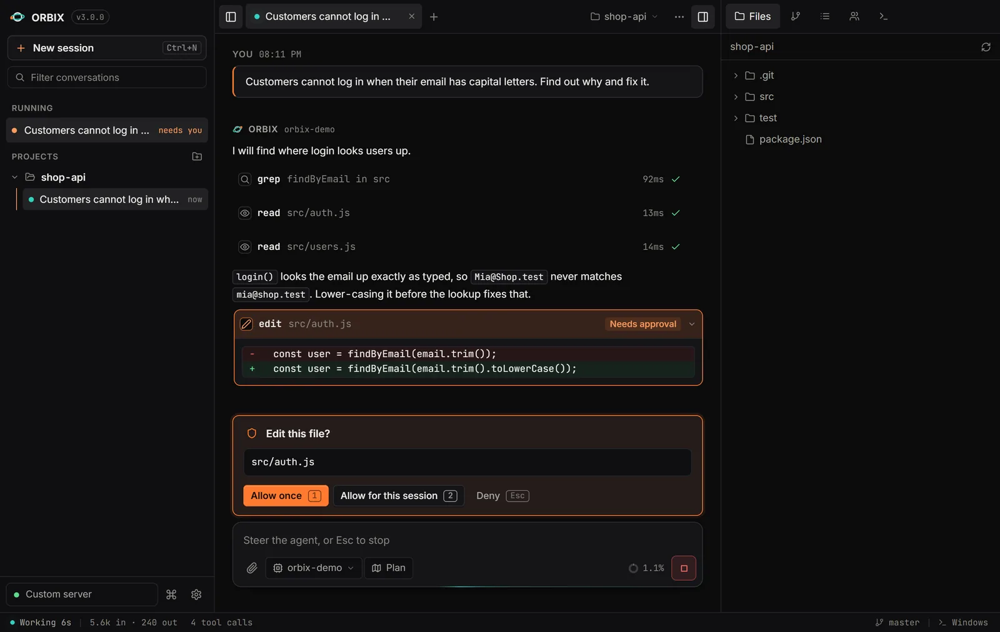
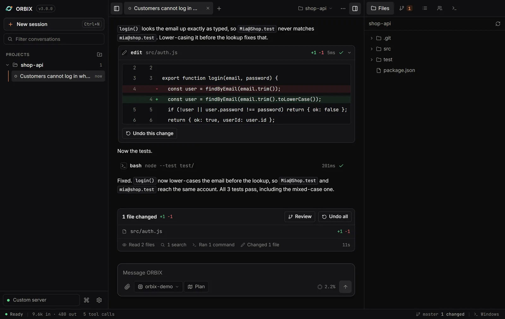
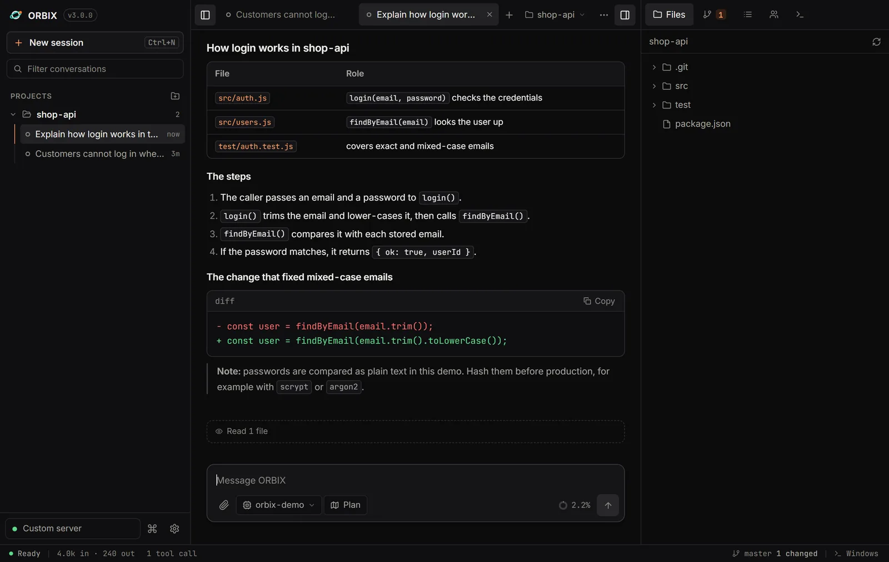
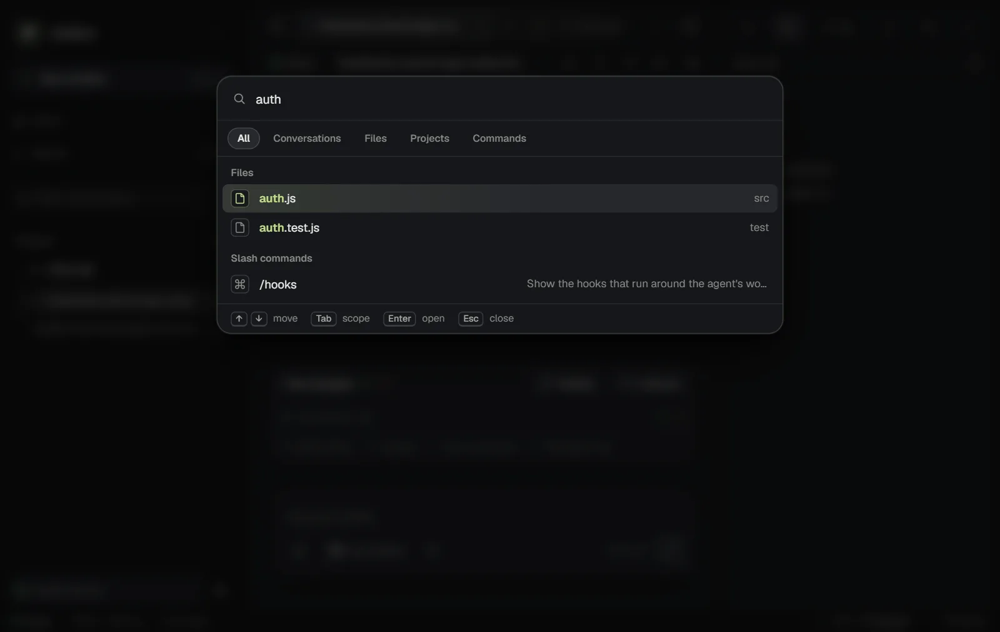
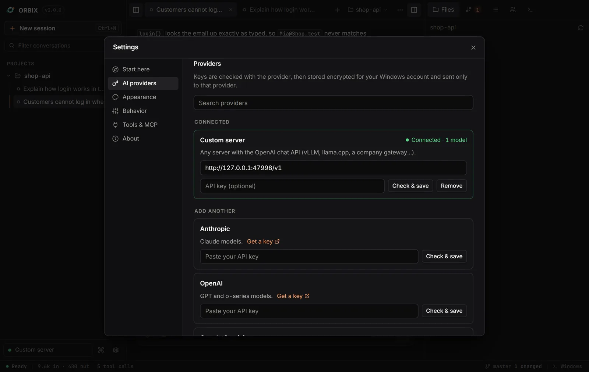
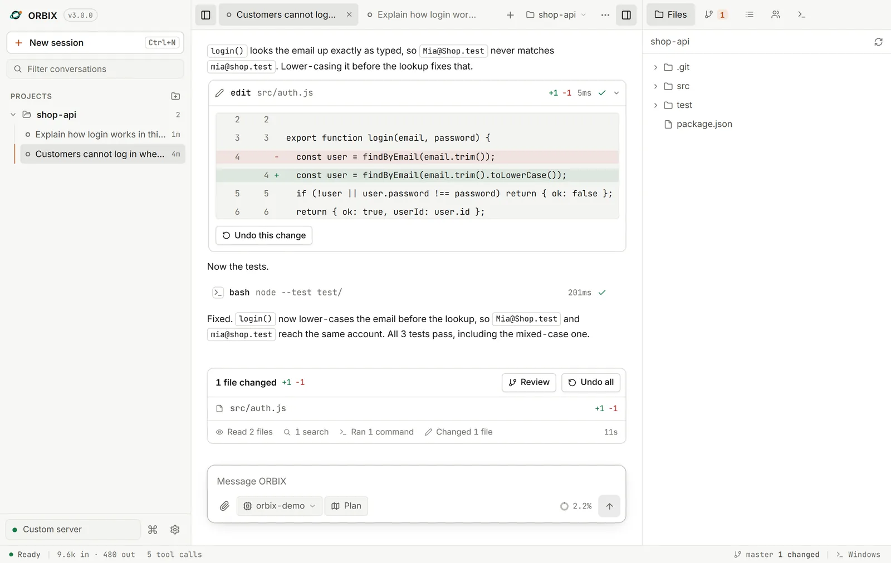

You approve every change
1 once, 2 this session, Esc deny.
Windows app for AI coding agents
Run AI coding agents without losing track of what they change.
Free to use · Source available · Windows 10 and 11
The problem
Demo
Click an approval, or press 1 2 Esc.
ORBIX wants to edit src/auth/validate.ts
Simulated in your browser. The real app is below.
Screenshots
Version 3.0.0 on Windows 11. Pick a screen.







Features
Every read, search and edit is a card you can open. Its plan sits beside it.
Files sit next to the chat. Type @ to hand one to the agent.
Each edit has its own undo. /undo reverts a whole reply.
Runs on Windows or in WSL. Output streams live and you can stop it.
Keep more than one task open in tabs. You get a notification when one finishes.
Change the model, thinking level and plan mode from the message box.
Models
17 built in. Paste a key or sign in with OpenRouter. Pick per session.
Safety
1 once, 2 this session, Esc deny.
Encrypted for your Windows account. Sent only to the provider you chose.
It listens on 127.0.0.1 only, so nothing outside your PC can reach it.
ORBIX saves its settings and chats in its own data folder.
Shortcuts
Hover or tap a command to see what it does.
FAQ
ORBIX has no account of its own. You bring a model: an API key from a provider, a sign-in such as OpenRouter, or a model running on your own PC.
To the model you choose, and only the files the agent reads for your task. A local model (Ollama or LM Studio) keeps everything on your PC.
Yes. Every file change has its own undo, and /undo reverts a whole reply.
No. Reading and searching never ask. Edits and commands ask first, unless you switch to “Allow everything” in Settings.
No. ORBIX is a Windows app. It can run commands on Windows or inside WSL.
ORBIX is free to use. The source is available under the Functional Source License and turns MIT after two years. Your model provider charges for its own usage.
Download
A Windows app for AI coding agents. Unzip it and run it. Node.js is included, so there is nothing else to install.
ORBIX isn't code-signed yet. Click More info, then Run anyway.
Get started in 3 steps
bin\ORBIX.exeSHA-256 checksum
8555b7edc699904e7742eedfe2a4aff2d5472c9f2bc71ac0a1e28e10bbaaf814